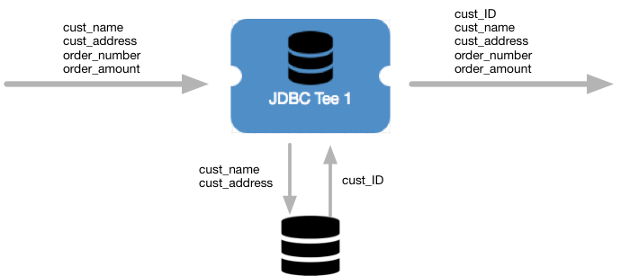

JDBC Tee
The JDBC Tee processor uses a JDBC connection to write data to a database table, and then pass generated database column values to fields. Use the JDBC Tee to write some or all record fields to a database table and then enrich records with additional data.
When you configure JDBC Tee, you specify connection information, table name, and optionally define field mappings. By default, JDBC Tee writes data to the table based on the matching field names. You can override the default field mappings by defining specific mappings.
You define generated column mappings to specify the output fields to pass the generated database column values to.
You can configure the stage to rollback an entire batch if an error occurs while writing part of the batch. You can also configure custom properties that your driver requires.
The JDBC Tee processor can use CRUD operations defined in the sdc.operation.type record header attribute to write data. You can define a default operation for records without the header attribute or value. You can also configure whether to use multi-row operations for inserts and deletes, and how to handle records with unsupported operations.
When processing data from a CDC-enabled origin, you can specify the origin change log to aid record processing. For information about Data Collector change data processing and a list of CDC-enabled origins, see Processing Changed Data.
To use a JDBC version older than 4.0, you can specify the driver class name and define a health check query.
Example
Let's assume that you are processing customer orders. You have a customer database table with an ID column as the primary key. The customer table is configured to generate a sequential number for the ID column as each row is inserted into the table. For example, the first customer row is assigned an ID of 001, and the second is assigned an ID of 002.
When you process a new customer’s order, JDBC Tee inserts the customer data to the customer table and the database returns the generated ID for that customer. JDBC Tee passes the generated ID value to a new cust_ID field in the record. The processor passes all record fields to the next stage in the pipeline for additional processing.
The following image displays a high-level overview of how JDBC Tee processes our customer order example:

Installing the JDBC Driver
Before you use the JDBC Tee, install the JDBC driver for the database. You cannot access the database until you install the required driver.
For information about installing additional drivers, see Install External Libraries.
Define the CRUD Operation
The JDBC Tee processor can insert, update, or delete data. The processor writes the records based on the CRUD operation defined in a CRUD operation header attribute or in operation-related stage properties.
- CRUD operation header attribute
- You can define the CRUD operation in a CRUD operation record header attribute. The processor looks for the CRUD operation to use in the sdc.operation.type record header attribute.
- Operation stage properties
- You define a default operation in the processor properties. The processor uses the default operation when the sdc.operation.type record header attribute is not set.
Single and Multi-row Operations
JDBC Tee performs single-row operations by default. That is, it executes a SQL statement for each record. When supported by the destination database, you can configure JDBC Tee to perform multi-row operations. Depending on the sequence of the data, multi-row operations can improve pipeline performance.
When performing multi-row operations, JDBC Tee creates a single SQL statement for sequential insert rows and for sequential delete rows. JDBC Tee does not perform multi-row update operations.
For example, say the pipeline generates three insert records, followed by two update records, and two delete records. With multi-row insert enabled, the JDBC Tee generates an Insert SQL statement for the three insert records, two Update statements - one for each of the update records, and a single Delete statement for the two delete records.
INSERT INTO <table name> (<col1>, <col2>, <col3>)
VALUES (<record1 field1>,<record1 field2>,<record1 field3>),
(<r2 f1>,<r2 f2>,<r2 f3>), (<r3 f1>,<r3 f2>,<r3 f3>),...;DELETE FROM <table name> WHERE <primary key> IN (<key1>, <key2>, <key3>,...);DELETE FROM <table name> WHERE (<pkey1>, <pkey2>, <pkey3>)
IN ((<key1-1>, <key1-2>, <key1-3>),(<key2-1>, <key2-2>, <key2-2>),...);Configuring a JDBC Tee
Configure a JDBC Tee processor to write data to a database table and enrich records with data from generated database columns.
-
In the Properties panel, on the General tab, configure the
following properties:
General Property Description Name Stage name. Description Optional description. Required Fields 
Fields that must include data for the record to be passed into the stage. Tip: You might include fields that the stage uses.Records that do not include all required fields are processed based on the error handling configured for the pipeline.
Preconditions Conditions that must evaluate to TRUE to allow a record to enter the stage for processing. Click Add to create additional preconditions. Records that do not meet all preconditions are processed based on the error handling configured for the stage.
On Record Error Error record handling for the stage: - Discard - Discards the record.
- Send to Error - Sends the record to the pipeline for error handling.
- Stop Pipeline - Stops the pipeline. Not valid for cluster pipelines.
-
On the JDBC tab, configure the following properties:
JDBC Property Description JDBC Connection String Connection string to use to connect to the database. Use the connection string format required by the database. Table Name Database table to write to. Some databases require a fully-qualified table name, such as <schema | database>:<tablename>. Use the table name format required by the database.Enter one of the following:- Name of an existing database table.
- Expression that evaluates to the name of an
existing database table. For example, if the table
name is stored in the "tableName" record
attribute, enter the following
expression:
${record:attribute('tableName')}
The processor creates the table if it does not exist.
Field to Column Mapping Use to override the default field to column mappings. By default, fields are written to columns of the same name. When you override the mappings, you can define parameterized values to apply SQL functions to the field values before writing them to columns. For example, to convert a field value to an integer, enter the following for the parameterized value:CAST(? AS INTEGER)The question mark (?) is substituted with the value of the field. Leave the default value of ? if you do not need to apply a SQL function.
Using simple or bulk edit mode, click the Add icon to create additional field to column mappings.
Generated Column Mappings Map the generated database columns to fields in the record. Enter the following: - Column Name. Name of the database column that contains the generated value. Enter a column name or enter an expression that defines the column.
- SDC Field. Name of the field in the record that receives the generated column value. You can specify an existing field or a new field. If the field does not exist, JDBC Tee creates the field.
Using simple or bulk edit mode, click the Add icon to create additional generated column mappings.
Change Log Format Format of change capture data. Use when processing change capture data. Default Operation 
Default CRUD operation to perform if the sdc.operation.type record header attribute is not set. Unsupported Operation Handling Action to take when the CRUD operation type defined in the sdc.operation.type record header attribute is not supported: - Discard - Discards the record.
- Send to Error - Sends the record to the pipeline for error handling.
- Use Default Operation - Writes the record to the destination system using the default operation.
Rollback Batch On Error Rolls back the entire batch when an error occurs within the batch. Use Multi-Row Operation Determines how the stage processes records. Select to enable inserting and deleting multiple records at a time. Before enabling this option, verify that the database supports the multi-row SQL statements used by the stage. For more information, see Single and Multi-row Operations. By default, the stage performs single-row operations.
Statement Parameter Limit Defines the number of parameters allowed in the prepared statement for multi-row inserts. Use -1 to disable the parameter limit. Default is -1.
Use Credentials Enables entering credentials on the Credentials tab. Use when you do not include credentials in the JDBC connection string. Additional JDBC Configuration Properties Additional JDBC configuration properties to use. To add properties, click Add and define the JDBC property name and value. Use the property names and values as expected by JDBC.